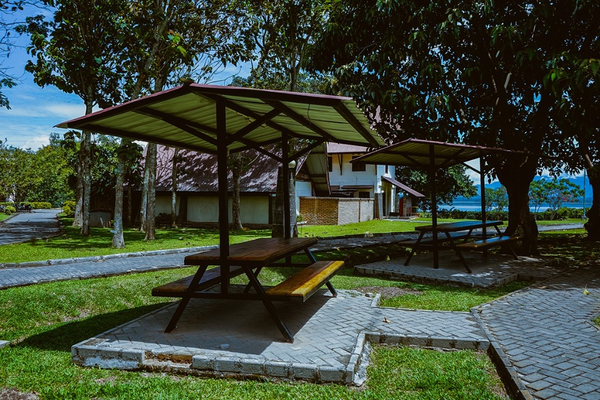

Proyek: SpotFinder IT Del
Inovasi sistem IoT cerdas berbiaya rendah (*low-cost, high-impact*) untuk memantau kapasitas fasilitas belajar kampus secara real-time langsung ke smartphone mahasiswa.
Hardware Cerdas di Lokasi
Menggunakan mikrokontroler ESP8266 / ESP32 dengan Layar OLED I2C dan Dual-Button Counter (Pin 14 Masuk, Pin 12 Keluar).
Aplikasi Web Responsif
Didesain dengan identitas resmi Royal Navy Blue IT Del dan panorama Danau Toba, dapat diakses dari browser HP tanpa install aplikasi berat.
Jalur Data Super Cepat
Terhubung ke broker MQTT kampus di IP 76.13.19.250, mengirim pembaruan data secara instan dan hemat kuota internet.
"Selamat pagi/siang Bapak Pembina Yayasan Del, Bapak Jenderal Luhut Binsar Pandjaitan, serta bapak/ibu sekalian. Izinkan saya memaparkan proyek inovasi teknologi terapan kami yang bernama SpotFinder IT Del. Ini adalah sistem Internet of Things berbiaya sangat terjangkau namun berkinerja tinggi, yang mentransformasikan fasilitas kampus IT Del menjadi Smart Campus yang disiplin, efisien, dan termonitor secara real-time."
Mengapa Aplikasi Ini Dibuat? (Fakta & Data)
Diciptakan berdasarkan observasi dan analisis inefisiensi waktu belajar mahasiswa di Institut Teknologi Del.
1. Inefisiensi Waktu (15-20 Menit)
Jarak asrama ke Gazebo tepi Danau Toba berkisar 250 - 400 meter. Berjalan ke lokasi hanya untuk mendapati tempat penuh membuang waktu 15–20 menit waktu belajar produktif mahasiswa.
2. Ketiadaan Data Real-Time
Area terbuka kampus (*outdoor spot*) tidak memiliki pengawas atau papan informasi jarak jauh. Mahasiswa tidak memiliki kepastian ketersediaan tempat duduk sebelum berangkat.
3. Overkapasitas & Disiplin Ruang
Tanpa adanya indikator kapasitas digital, gazebo sering berdesakan melebihi kuota 10 orang, mengganggu ketertiban dan fokus belajar mahasiswa.
"Bapak Pembina yang kami hormati, di IT Del kita diajarkan tentang kedisiplinan dan efisiensi waktu. Fakta di lapangan menunjukkan bahwa mahasiswa sering membuang waktu 15 hingga 20 menit berjalan kaki ke Gazebo tepi Danau Toba, namun sesampainya di sana ternyata tempat sudah penuh 100%. Tidak adanya data ketersediaan tempat secara jarak jauh menjadi inefisiensi nyata. SpotFinder kami ciptakan untuk menyelesaikan masalah ini secara tuntas."
Cara Kerja Alat & Efisiensi Biaya (< Rp 100 Ribu)
Membuktikan bahwa inovasi berkelas tidak harus mahal, dibangun dengan arsitektur IoT modern yang modular.

Logika Counter Dua Arah
Pin 14 (Masuk) menambah hitungan (+1 orang), Pin 12 (Keluar) mengurangi hitungan (-1 orang). Dilengkapi anti-double-click (debounce 220ms).
Layar OLED di Lokasi
Menampilkan status TERISI dan KOSONG secara real-time di gazebo agar pengunjung fisik langsung tahu sisa kuota.
Protokol MQTT Kampus
Data dikirim dalam format JSON ringkas via WiFi ke broker MQTT 76.13.19.250, lalu disiarkan ke dashboard web mahasiswa via WebSocket.
"Dari segi biaya, sistem ini sangat efisien. Satu unit hardware lengkap hanya membutuhkan biaya kurang dari 90 ribu rupiah. Saat tombol Pin 14 ditekan saat ada orang masuk, angka di layar OLED gazebo bertambah, dan dalam waktu kurang dari 100 milidetik data di smartphone seluruh mahasiswa langsung berubah tanpa perlu me-reload web. Sangat cepat, hemat kuota, dan hemat daya."
Pengembangan Lebih Luas (Smartphone & Fasilitas Publik)
Konsep dasar Smart Capacity & People Flow Counter ini sangat fleksibel dan siap diperluas ke berbagai fasilitas publik nasional.
1. Smart Parking Kawasan Danau Toba
Dipasang di palang parkir destinasi wisata atau kampus. Pengendara dapat mengecek sisa slot parkir mobil/motor dari HP sebelum tiba di lokasi.
2. Rumah Sakit & Puskesmas
Memantau ketersediaan Bed Rawat Inap dan nomor antrean poliklinik secara transparan langsung di smartphone keluarga pasien.
3. Antrean Kantor Pelayanan & Bank
Mengurangi penumpukan fisik masyarakat di ruang tunggu dengan tiket antrean digital yang berjalan live di smartphone.
4. Integrasi Sensor Otomatis & AI
Tombol manual dapat ditingkatkan dengan Sensor Inframerah (IR Beam) atau Kamera AI untuk mendeteksi pergerakan orang secara otomatis.
"Bapak Pembina, inovasi ini tidak berhenti di gazebo saja. Jika dihubungkan lebih jauh ke aplikasi smartphone, sistem ini bisa kita terapkan untuk Smart Parking di kawasan wisata Danau Toba, pemantauan tempat tidur rumah sakit, dan antrean pelayanan publik. Ini adalah pondasi nyata menuju implementasi Smart City yang modern dan terdata."
Komitmen & Nilai Del: MarTuhan, Marroha, Marbisuk
Mewujudkan karakter unggul mahasiswa IT Del melalui karya teknologi terapan yang solutif.
MarTuhan (Integritas)
Teknologi yang dibangun dengan kejujuran data dan ditujukan untuk kebaikan bersama civitas akademika.
Marroha (Kepedulian)
Peka terhadap kesulitan sesama mahasiswa dalam efisiensi waktu belajar dan kenyamanan fasilitas kampus.
Marbisuk (Kebijaksanaan & Inovasi)
Menjawab tantangan dengan kecerdasan rekayasa teknologi IoT yang murah, efektif, dan siap diterapkan.
"Demikian pemaparan proyek SpotFinder IT Del. Kami bertekad untuk terus membuktikan bahwa mahasiswa Institut Teknologi Del mampu menciptakan teknologi terapan yang berdampak nyata, berlandaskan nilai MarTuhan, Marroha, Marbisuk. Terima kasih atas arahan dan bimbingan Bapak Pembina, kami siap mendemonstrasikan alat ini secara langsung."
💡 Navigasi Slide Cepat: Tekan tombol ◀ Panah Kiri dan Panah Kanan ▶ pada keyboard laptop Anda.